Arbeiten mit GeODinQGIS
GeODinQGIS ist ein Plugin, das QGIS mit dem der Software GeODin verbindet. Dadurch wird es möglich, GeODin-Datenbanken auch in QGIS zu verwenden. Wichtig ist hierbei, dass eine aktuelle GeODin-Version verwendet wird und QGIS in der 32-bit Variante installiert wurde, da sonst keine Datenbanken eingeladen werden können.
3........ Darstellung
in QGIS3
1 Übersicht
Nach dem Hinzufügen des Plugins in QGIS werden Buttons der Toolbar hinzugefügt.
Von links nach rechts handelt es sich dabei um:
1. Die Arbeitsoberfläche von GeODinQGIS
2. Das Optionenmenü
3. Der Refresh Button zum Neu laden von QGIS Layern
4. Die Hilfe.
Die Flagge im Otionenmenü zeigt die jeweilige Sprache des Plugins und kann frei gewählt werden. Vorläufig stehen nur die Sprachen Englisch und Deutsch zur Verfügung.
Durch einen Klick auf den GeODin Button öffnet sich ein Fenster, das an den rechten Fensterrand angedockt ist.
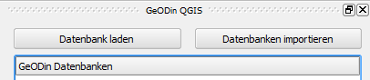
Ein Klick auf den Button „Datenbank laden“ ermöglicht die Auswahl einer Datenbank aus dem Dateisystem.
Der Button "Datenbank importieren" liest die Windows Registry aus und lädt die in GeODin registrierten Datenbanken.
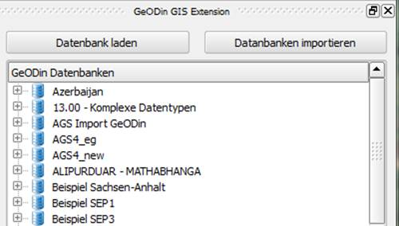
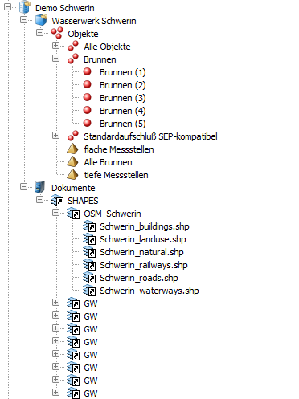
Dabei werden nur Datenbanken aufgeführt, die mit Hilfe von GeODin erstellt wurden. Andere Datenbanken, die manuell über die GeODin ini in GeODin hinzugefügt wurden, werden nicht beachtet, da diese nicht in der Windows Registry aufgeführt werden. Wenn eine Datenbank gelöscht wurde, ohne die Datenbankverbindung in GeODin selbst zu deaktivieren, kann die Datenbank nicht eingeladen werden, obwohl ein Verweis in der Registry existiert. In diesem Fall wird ein Fenster mit einer Fehlermeldung ausgegeben.Die Baumstruktur orientiert sich an der Darstellung, wie sie vom GeODin-Objektmanager bekannt ist.
2 Erste Schritte
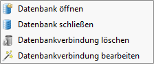
Das Datenbankmanagement kann auf der Datenbankebene über das Rechtsklickmenü aufgerufen werden.Um eine Datenbankverbindung wieder zu bearbeiten, kann das Rechtsklickmenü auf der Datenbankebene aufgerufen werden.
Über dieses Menü kann die Datenbankverbindung verändert oder gelöscht werden. Dabei wird nur die Verbindung zu QGIS betrachtet, die Datenbank und die Datenbankverbindung zu GeODin bleiben unangetastet.
3 Darstellung in QGIS
Zusätzlich zu den Objekten der GeODin-Datenbanken werden auch die in der Datenbank gespeicherten Shape-Dateien angezeigt, sofern sie sich im Ordner "Dokumente" befinden. Da es sich um Vektordateien handelt, können sie auf einfache Weise einer Karte in QGIS hinzugefügt werden.
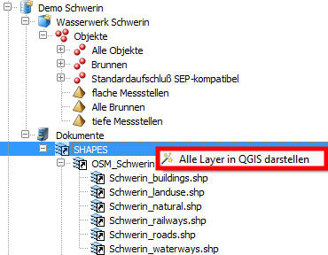
Dazu wird an der entsprechenden Stelle das Rechtsklickmenü aufgerufen und die Datei oder die Gruppe als Layer in QGIS hinzugefügt. Da die Shape-Datei bereits im Dateisystem existiert, ist dort auch eine Koordinatenreferenz hinterlegt. Daher muss kein Dialog geöffnet werden, um ein Koordinatensystem auszuwählen.
Beim Navigieren durch den Objektmanager können auch Objekte einer Objektart oder alle Objekte eines Projekts der Karte hinzugefügt werden. Dazu wird unterhalb des Reiters "Alle Objekte" das Rechtsklickmenü aufgerufen.
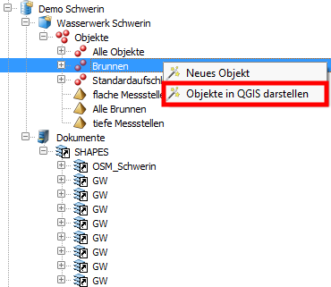
Diese Punkte werden in einer temporären Vektordatei abgelegt, die Koordinatenreferenz wird über einen Dialog angegeben, der sich im Anschluss automatisch öffnet.
Hinweis: Das Beenden des Dialogs zur
Auswahl eines Koordinatensystems hat zur Folge, dass die Vektordatei im
Standardkoordinatensystem (meist WGS84) referenziert wird. Da es sich dabei um
eine QGIS-interne Funktion handelt, müssen diese Einstellung in den Optionen
von QGIS vorgenommen werden, falls eine Änderung erwünscht ist. Ein
Dialogabbruch hat nicht zur Folge, dass das Hinzufügen der Objekte unterbrochen
wird.
Wenn Objekte aus der GeODin-Datenbank in QGIS dargestellt und Änderungen an der Datenbank vorgenommen werden, können diese Änderungen auch mit der Vektordatei in QGIS synchronisiert werden. Dazu wird in der oberen Werkzeugleiste der Schalter "Aktualisieren" betätigt. Dieser liest Änderungen in der Datenbank und überträgt diese in die Vektordatei. Sollte unabhängig davon die Vektordatei bearbeitet worden sein, werden diese Änderungen verworfen.
4 Neues Objekt
Das Rechtsklickmenü auf dem Knoten "Alle Objekte" oder einer Objektart ermöglicht die Erstellung neuer Objekte.
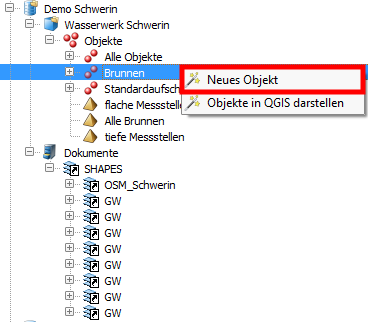
Es öffnet sich ein rechts gedocktes Fenster.
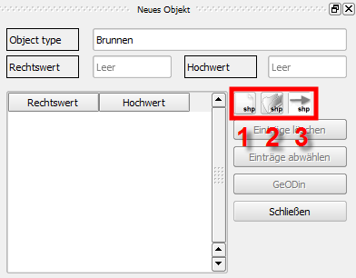
Hinzufügen einer Vektordatei
Neue Objekte werden
als Punkte in einer Vektordatei gespeichert. Dazu sind drei Möglichkeiten
gegeben:
1. Es kann eine neue Vektordatei im Dateisystem angelegt werden. Es öffnen sich nacheinander zwei Dialoge zur Angabe der Koordinatenreferenz und zum Dateipfad. Nachdem die Datei erfolreich angelegt worden ist, wird sie in der Layerübersicht in QGIS angezeigt.
2. Es kann eine bereits bestehende Vektordatei aus dem Dateisystem geladen werden. Nachdem die Datei erfolreich geladen worden ist, wird sie in der Layerübersicht in QGIS angezeigt.
3. Es kann eine bereits in QGIS geöffnete Vektordatei verwendet werden. Diese muss in der Layerübersicht als "sichtbar" aktiviert sein. Es öffnet sich ein Dialog, um die entsprechende Datei aus der Layerübersicht auszuwählen. Dabei muss die Datei physisch im Dateisystem hinterlegt sein, da ein Dateipfad benötigt wird. Eine volatile Vektordatei ist nicht zulässig, da sich diese nur im Arbeitsspeicher befindet. Die Struktur der Attributtabelle muss den Vorgaben des Plugins entsprechen, was bedeutet, dass die Vektordatei in der Vergangenheit schon über diese Methode angelegt worden sein muss.
4.
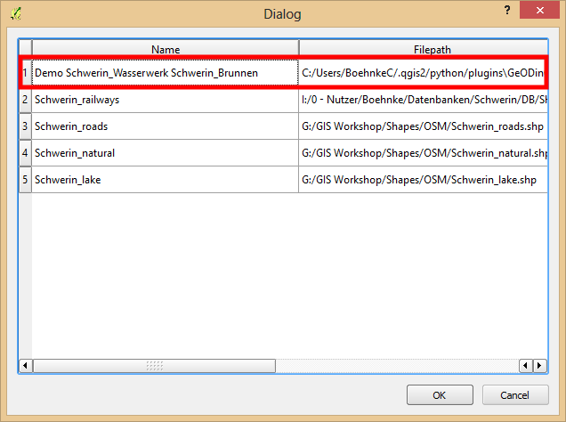
In den Fällen 2 und 3 wird die Tabelle der Methode "Neues Objekt" mit den Koordinaten der Punkte gefüllt, sofern die geladene Vektordatei nicht leer ist.
Hinzufügen eines neuen Objektes
Zum Hinzufügen eines neuen Objektes werden die Editierfunktionen von QGIS verwendet. Dazu wird die Vektordatei in der Layerübersicht markiert und der Editiermodus für diese Datei aktiviert. Anschließend können auf gewohnte Art und Weise neue Punkte in der Karte angelegt werden.


Ebenso können die Punkte in der Karte über das Knotenwerkzeug verschoben werden.
Die Methode "Neues Objekt" erlaubt auch die Eingabe von exakten Koordinaten, die Vektordatei muss sich dafür im Editiermodus befinden. Durch einen Doppelklick auf die jeweilige Tabellenzelle kann eine Eingabe getätigt werden.
Um Einträge aus der Tabelle zu entfernen, muss sich die Vektordatei im Editiermodus befinden. Der Eintrag wird dadurch in der Vektordatei gelöscht und ist somit auch nicht mehr in der Attributtabelle oder der Karte vorhanden.
Um etwaige Änderungen wie neue, veränderte oder gelöschte Objekte zu übernehmen, werden der Editiermodus beendet und die Änerungen abgespeichert. Dann erst sind die Änderungen in den Tabellen sichtbar.
Hinweis: Durch einen Fehler im Programmkern
von QGIS kann es zum Absturz des Programms kommen, wenn der Editiermodus
beendet und die Änderungen verworfen werden.
Exportieren eines neuen Objektes
Ein über das Plugin neu erstelltes Objekt ist bisher nur in einer Vektordatei gespeichert und wurde noch nicht einer GeODin-Datenbank hinzugefügt. Zu diesem Zweck wird ein Objekt in der Koordinatentabelle markiert, die zu exportierenden Koordinaten werden in den beiden oberen Fenstern angezeigt. Der zuvor deaktivierte Button "GeODin" ist nun verfügbar. Ein Klick darauf öffnet im Hintergrund eine COM-Funktion, die in GeODin die Methode "Datenerfassung und -pflege" startet, um das Objekt der Datenbank hinzuzufügen. Sollte mehr als ein Objekt selektiert worden sein, wird die Exportfunktion deaktiviert, da immer nur ein Objekt nach GeODin übertragen werden kann. Um mehrere Object nach GeODin zu exportieren, kann in GeODin die Methode "Stammdatenimport" verwendet und eine Shape-Datei geladen werden.
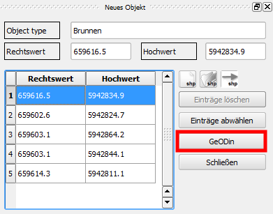 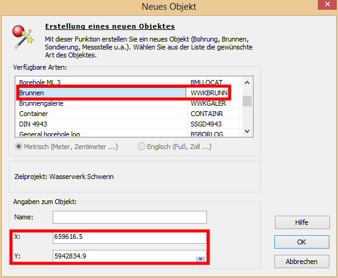
Nachdem das Objekt der Datenbank
beigefügt wurde, erscheint es in einer eigenen automatischen Abfrage im
GeODin-Objektmanager und wird noch nicht unter der entsprechenden Objektart
aufgeführt. Dies geschieht erst, nachdem die Datenbank neu geladen wurde. Gleiches
gilt für die Datenbank in QGIS.
5 Abfragen
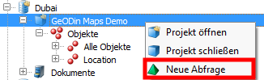
Ein Rechtsklick auf der Projektebene ermöglicht die Erstellung von Abfragen, das Symbol ist eine grüne Pyramide.Die FROM-Klausel muss dabei per Hand eingegeben werden. Bei komplizierten Abfragen sollte der Text der FROM-Klausel aus GeODin kopiert werden.
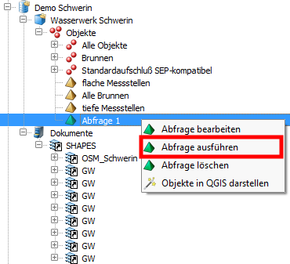
Die Abfrage muss vom Nutzer ausgeführt werden, dazu wird an der Abfrage das Rechtsklickmenü aufgerufen. Anschließend öffnet sich der Objektbaum automatisch und zeigt alle Objekte an, die diese Abfrage erfüllen.
Nutzerabfragen, die in GeODin erstellt worden sind, werden automatisch beim Importieren der Datenbank in QGIS angezeigt. Das Symbol ist eine gelbe Pyramide. Auch diese Abfragen müssen über das Rechtsklickmenü ausgeführt werden.
Da es sich bei Abfragen auch um eine Gruppe von Objekten handelt, können diese, ähnlich wie Objektarten, als Gruppe der Karte in QGIS hinzugefügt werden.
Wenn an der Abfrage in GeODin Ergebnisfelder definiert wurden, werden diese im Hintergrund nach QGIS übertragen. Sie werden der Attributtabelle angefügt, wenn die Objekte als Vektordatei in QGIS dargestellt werden.
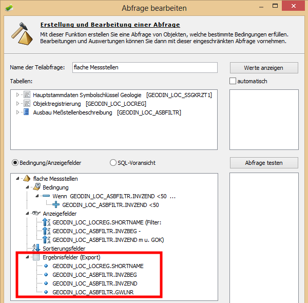
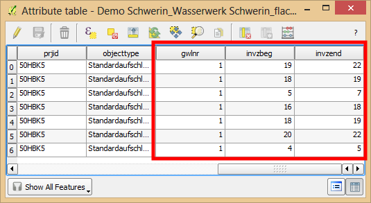
6
Layouts
Die Layoutansicht erfolgt am Objekt selbst.
Dazu wird der Datenbankbaum bis auf die Objektebene geöffnet und das
Rechtsklickmenü am gewünschten Objekt aufgerufen.
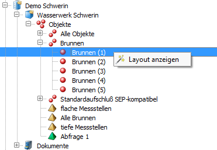
Es öffnet sich ein neuer Dialog, in dem der
gewünschte Layoutordner ausgewählt werden muss. Die obere Symbolleiste
ermöglicht das Hinzufügen eines neuen Ordners aus dem GeODin-Layoutverzeichnis
der Standardinstallation. Ebenso kann ein Layoutordner aus der Liste wieder
entfernt werden.
In der rechten Tabellenspalte sind alle Layouts
aufgeführt, die im ausgewählten Ordner enthalten sind.

Bei der Darstellung des Layouts handelt es sich
um eine temporäre Datei im PDF-Format. Somit stehen auch die üblichen
Steuerelemente einer PDF-Datei wie Zoom und Seitenwechsel zur Verfügung.
Sämtliche Einstellungen zum Layout müssen in GeODin vorgenommen werden, da das
Plugin nur die Ansicht bereitstellt.
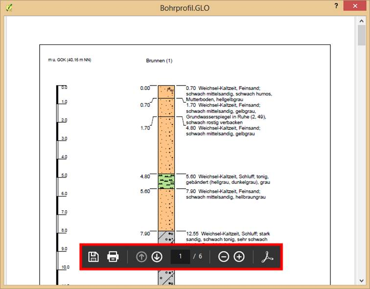
7 Einstellungen
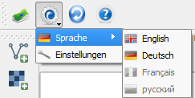
Die Einstellungen können am Zahnrad-Symbol in der Symbolleiste aufgerufen werden. Allgemeine Änderungen beinhalten die Sprache und die generellen Einstellungen des Plugins.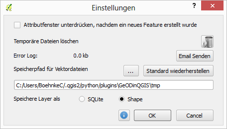
Für gewöhnlich öffnet sich in QGIS ein Fenster, wenn ein neues Objekt mit Hilfe des Editiermodus der Karte hinzugefügt wird. Um das Erscheinen dieses Fenster zu unterdrücken, kann in den Einstellungen die Option "Attributfenster unterdrücken, nachdem ein neues Feature erstellt wurde" aktiviert werden.
Bei der Arbeit mit dem Plugin werden gelegentlich temporäre Dateien angelegt. Sofern diese nicht mehr benötigt werden, können sie aus dem Ordner gelöscht werden, indem der entsprechende Schalter gedrückt wird.
Sobald ein Fehler auftritt, wird dieser in die Errorlog-Datei geschrieben. Ebenso gibt es die Möglichkeit eine Email an den GeODin-Support zu senden. Dadurch öffnet sich automatisch der vorinstallierte Emailbrowser. Die Errorlog-Datei und die Fehlermeldung müssen jedoch manuell der Email beigefügt werden.
Vektordateien, die mit dem Plugin erzeugt worden sind, werden, sofern nicht anders angegeben, im temporären Ordner des Plugin abgelegt. Dieser Speicherpfad kann beliebig verändert, ebenso kann der Standard wiederhergestellt werden.
Die Vektordateien können in zwei Formaten gespeichert werden. Die Arbeit mit SQLite bietet den Vorteil, dass die Feldnamen länger als 8 Zeichen sein dürfen, was beim Shape-Format auf 8 Zeichen Länge limitiert ist. Allerdings bietet das Shape-Format eine schnellere Arbeitsumgebung.